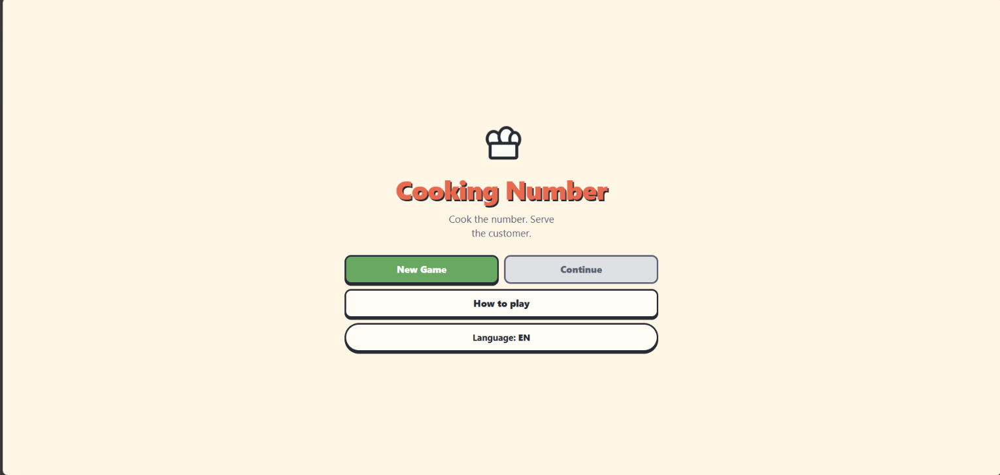

Indeks project
Pl. 03 — Pratinjau antarmuka Cooking Number.
Cooking Number
Game edukasi matematika bertema restoran untuk siswa SMP.


Tentang project
Cooking Number adalah game edukasi matematika di mana pelanggan memesan sebuah angka, lalu pemain menyusun angka-angka yang tersedia menggunakan operator matematika hingga cocok, kemudian menyajikannya.
Game ini melatih kaidah operasi hitung dengan aritmetika pecahan eksak (tanpa floating point, misalnya 0.1 + 0.2 harus tepat 0.3). Soal dibangun dengan pendekatan backward generation sehingga selalu dijamin memiliki solusi.
Fitur utama
- Gameplay menyusun angka sesuai pesanan pelanggan
- Aritmetika pecahan eksak (bebas error floating point)
- Kaidah operasi: × dan ÷ mengikat lebih kuat dari + dan −
- Operator biner (+ − × ÷) dan unary (^ √)
- Generator soal backward generation + jaminan solvable
- Mode & level beragam dengan UI multi-pelanggan
- Progres level tersimpan di Local Storage
- Musik & efek suara menggunakan Web Audio API
- Kontrol drag & drop plus tap-to-place (ramah HP)
Teknologi
JavaScript (ES Modules)interact.jsWeb Audio APIHTML & CSS